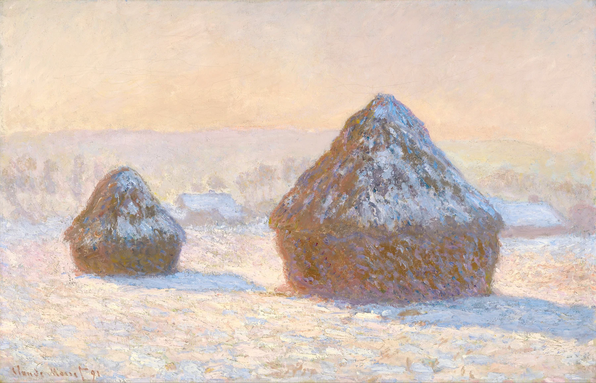

色そのものより、隣り合う色・繰り返す色・明るさの差を見る。色は画面の流れも作っている。
色を見るというと、「青がきれい」「赤が鮮やか」と感想を言うところで止まりがちです。そこから一歩だけ進めて、その色の隣には何色があるか、同じ色がどこに繰り返されているかを見る。色を単体ではなく関係で見ると、画面のつながりが急に見えてきます。
1. この見方を知ったきっかけ
この「絵の見方」シリーズは、『絵を見る技術』で知った見方を参考にしながら、専門知識のない自分でも美術館で実際に試せるように整理しています。用語を覚えることより、作品の前で一つ試してみることを目的にしています。
2. 最初に飛び込んだ色を一つ選ぶ
作品の前で最初に「赤が強い」「青い画面だ」と感じたら、その感覚をそのまま使います。
色名を正確に言う必要はありません。まず、一番強く感じた色を一つ選ぶ。それが色を見る入口です。
最初に選ぶ色は、作品の中で一番面積が大きい色でなくてもかまいません。ほんの小さな赤や黄色が妙に気になるなら、その色を入口にします。「なぜ小さいのに目立つ？」と考えると、周囲の色との対比が見えてきます。
3. その色の隣に何色があるか
黄色が強く見えるのは、隣に濃い青があるからかもしれません。赤が目立つのは、周囲が緑や灰色だからかもしれません。
一色だけではなく、色同士の関係を見ると、なぜその色が強いのかが分かりやすくなります。
同じ青でも、白の隣では濃く見え、黒の隣では明るく見えることがあります。色は単独で固定されたものというより、隣の色によって印象が変わるものです。気になる色を一つ見つけたら、すぐ隣を二、三か所見る。それだけで「色を見る」がかなり具体的になります。
4. 同じ色が画面のどこに繰り返されるか
人物の服の赤と、遠くの小さな旗の赤。同じ色が離れた場所に置かれると、目がその二点を行き来します。
色は物を塗るだけでなく、視線をつなぐ役割も持っています。
繰り返される色は、離れた場所同士を結ぶ役目もします。人物の服の赤が背景の小さな旗にも出ている、空の青が水面にも反射している。目は同じ色を探して移動するので、色そのものが視線の経路を作ることがあります。
5. 明るい・暗いも色の一部として見る
同じ青でも、光が当たった青と影の青では印象が違います。明暗の差が大きいと、形が立体的に見えたり、ドラマチックに見えたりします。
色相だけでなく、明るさの差も一緒に見ると作品の空気が見えます。
6. 影の中に黒以外の色を探す
印象派の作品を見るときに特に面白いのが影です。影だから黒、と決めずに近くで見ると、青、紫、緑など複数の色が入っていることがあります。
影の色を見ると、画家が光をどう感じていたのかが見えてきます。

7. 実物では「色の密度」が変わる
スマホや図版は画面の明るさで色が見えますが、実物は絵の具そのものが光を反射しています。
厚く塗られた明るい色、薄く透ける暗い色など、画像では同じ色に見えても質感が違います。美術館では近くと少し離れた位置を往復してみます。
画集やスマホでは、画面の明るさや撮影条件によって色がかなり変わります。実物では、絵の具の厚み、下地、表面の光沢、照明まで含めて色が見えます。画像では一色に見えた場所に、実際は複数の色が重なっていることもあります。だから有名作品ほど「知っている色」と実物の差を探すのがおすすめです。
8. 最後に「この絵の三色」を決める
鑑賞後、その作品を代表する色を三つだけ選んでみます。青・黄・白のような大まかな言い方で十分です。
その三色がどこにあり、どれが一番強いか。これだけで、作品の印象を色から思い出しやすくなります。
三色を決めたら、「その三色のうち、どれが一番少ないのに効いているか」まで考えてみます。面積が少ない色が画面を締めていることもあります。最後に一色だけ選ぶなら何色か。自分なりの答えを持つと、作品の色が記憶に残りやすくなります。
色そのものより、隣り合う色・繰り返す色・明るさの差を見る。色は画面の流れも作っている。